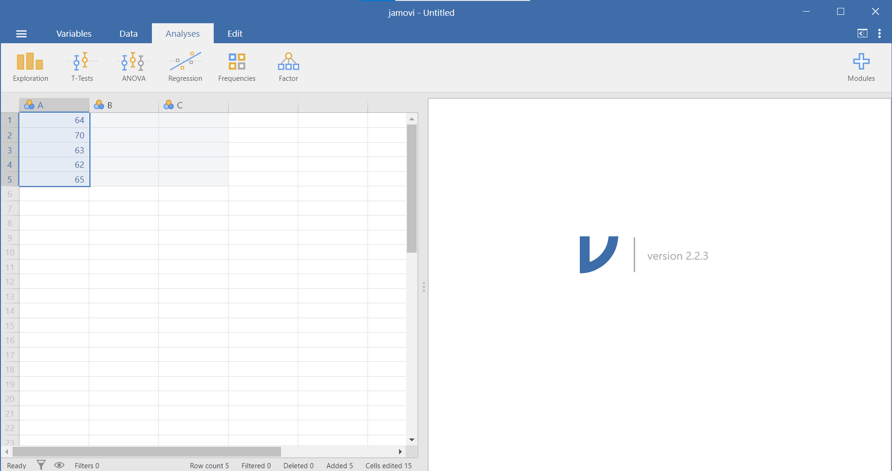
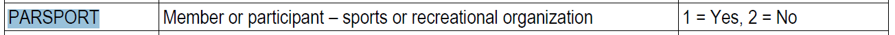
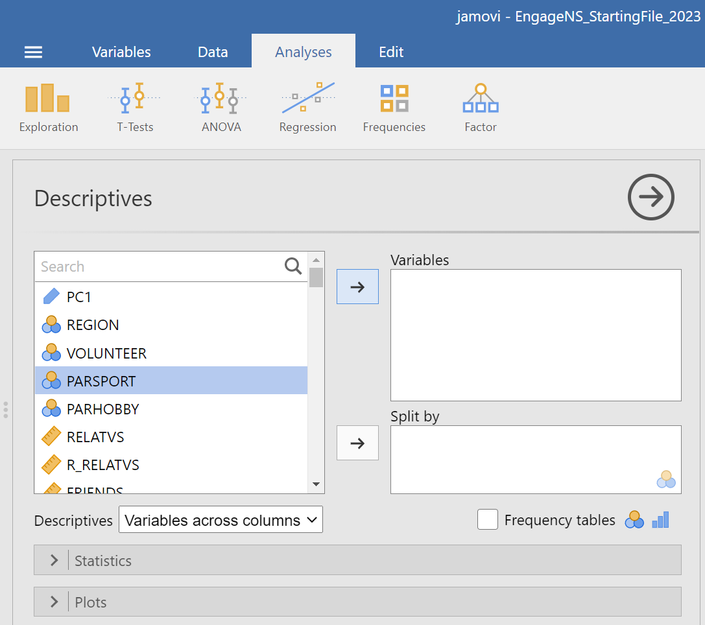
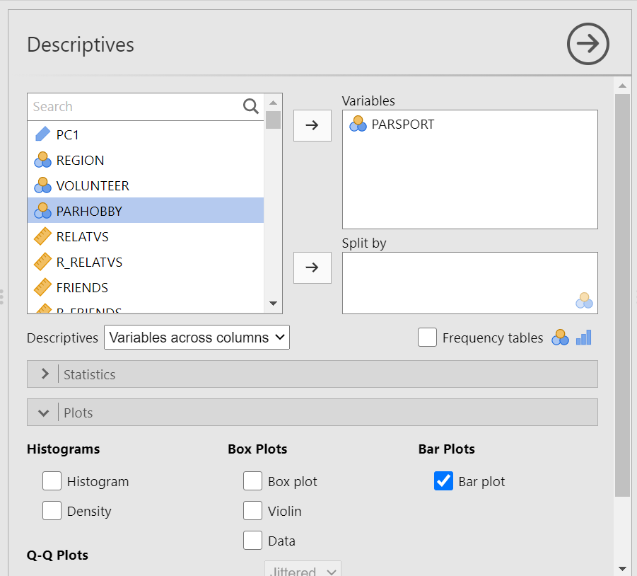
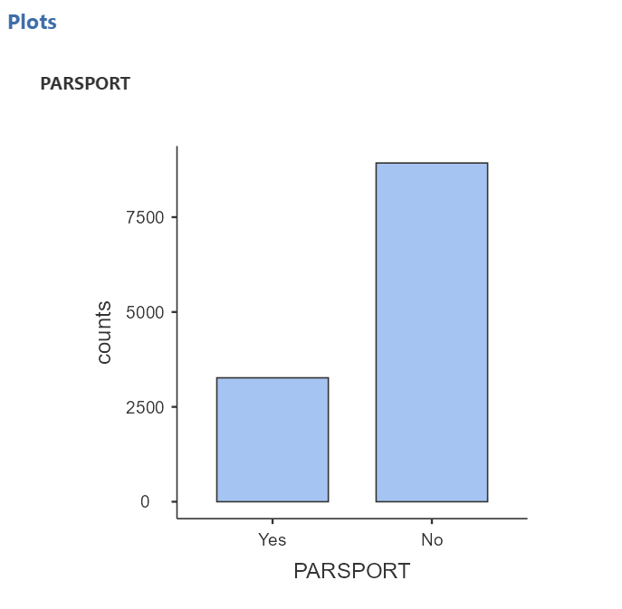
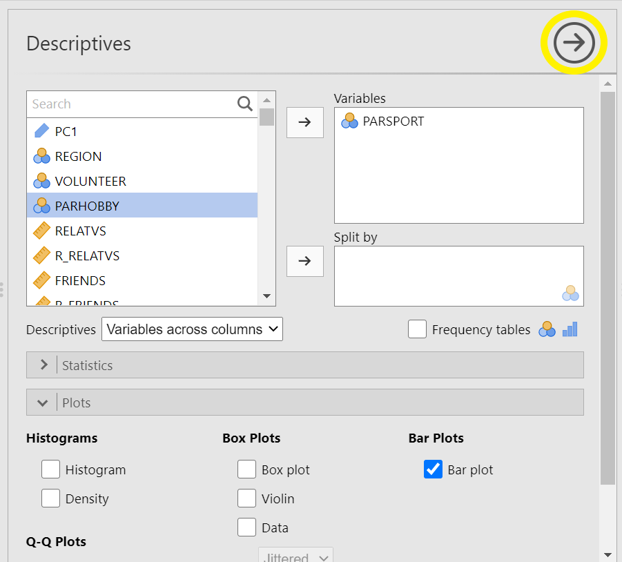
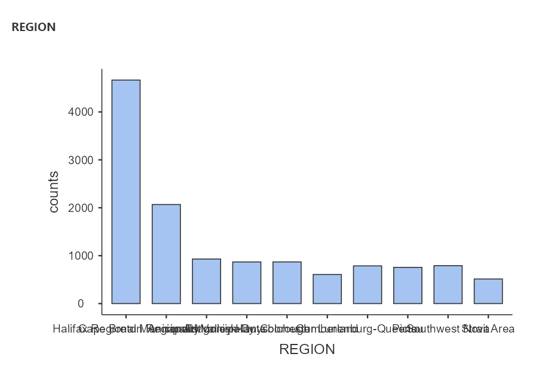
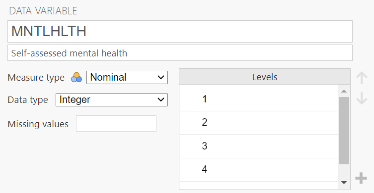
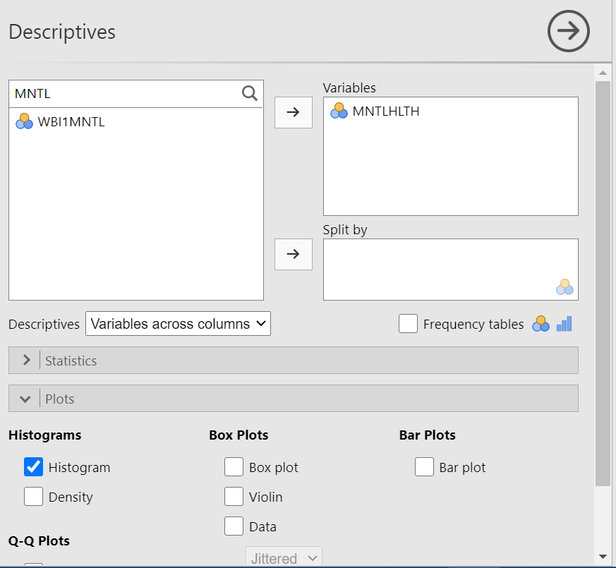
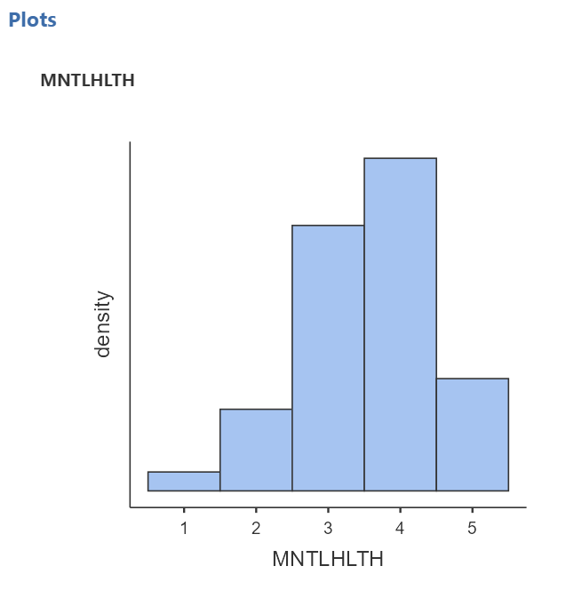

Chapter 1 Lab 1: Graphing Data
The commonality between science and art is in trying to see profoundly - to develop strategies of seeing and showing. -Edward Tufte
As we have found out from the textbook and lecture, when we measure things, we get lots of numbers. Too many. Sometimes so many your head explodes just thinking about them. One of the most helpful things you can do to begin to make sense of these numbers, is to look at them in graphical form. Unfortunately, for sight-impaired individuals, graphical summary of data is much more well-developed than other forms of summarizing data for our human senses. Some researchers are developing auditory versions of visual graphs, a process called sonification, but we aren’t prepared to demonstrate that here. Instead, we will make charts, and plots, and things to look at, rather than the numbers themselves, mainly because these are tools that are easiest to get our hands on, they are the most developed, and they work really well for visual summary. If time permits, at some point I would like to come back here and do the same things with sonification. I think that would be really, really cool!
1.1 General Goals
Our general goals for this first lab are to get your feet wet, so to speak. We’ll do these things:
- Load in some data to a statistical software program
- Talk a little bit about how the data is structured
- Make graphs of the data so we can look at it and make sense of it.
We will use the EngageNS data to accomplish these goals.
1.2 JAMOVI - Week 4 - January 27th, 28th, & 29th
This section is copied almost verbatim, with some editorial changes, from Answering questions with data: The lab manual for R, Excel, SPSS and JAMOVI, Lab 1, Section 1.4, SPSS, according to its CC license. Thank you to Crump, Krishnan, Volz, & Chavarga (2018).
In this lab, it is hoped you will become more acquainted with the jamovi software layout and graph some sample data to make sense of it. We will be doing the following:
- Deciding on which is the best graph based on the scale of measurement
- Reviewing variable attributes (or properties) using the Edit (in Variables menu) or Setup (in Data menu) buttons
- Opening a data file and producing different types of graphs
1.2.1 Getting ready for this lesson
Please complete all of these tasks before your lab starts. Do these tasks as soon as possible and post to the Q&A forum or come to Help Hours if you run into any problems.
You will need to use the EngageNS data set and data dictionary during this lab. Be sure to have the data set (in its original state; without analyses) opened in JAMOVI and the data dictionary opened in Preview or Adobe.
Read over all of Sections 1.5.4 through 1.5.7.NOTE: You can skip over Sections 1.5.2 and 1.5.3 if you feel comfortable with those ideas already.
1.2.2 Opening JAMOVI and Reviewing the JAMOVI Layout
To open jamovi if you are using Windows, either double-click its icon located on the desktop of your computer, or click it in the Start menu.
To open jamovi if you are using a Mac, find the icon in your Applications folder and double-click it.
Once the program loads, you can click on the button that looks like three horizontal lines at the top left. This bottom reveals a menu. Take note that you have some familiar options here: New (for a new file), Open (to open an existing file), and Save. For now, we will be reviewing the basic layout of jamovi without a data set, so you can click the left facing arrow to close this menu.
Once you do, the main jamovi spreadsheet should be apparent. It will look like this, with a basic spreadsheet on the left and a results panel on the right:
Figure 1.1: Empty jamovi spreadsheet
As explained in Section 0.6.1.2, you can slide the separating line between these two panels to make one panel or the other larger. You should also recall that, in the spreadsheet, each row represents a case, a subject, or a participant and each column represents a variable. (For more details about the jamovi program, see Section 0.6.) If, for example, you obtained the heights (in inches) of 5 people {x = 64, 70, 63, 62, 65} and wanted to enter their data into jamovi, each person’s height would be entered in a new row, as seen below, not across the columns:

1.2.4 Opening a Data File (Through the JAMOVI Software)
Now that we know about the properties of the jamovi spreadsheet window, let’s open a data file and learn how to make some sense of it by creating different types of graphs. (It is not important for you to Save the jamovi file you just created because we will not be doing anything with those fictitious height data).
Through your lab Moodle site, you agreed to some terms of use regarding the data set we will be using in this lab. Then, you downloaded the data file and saved the file somewhere sensible on your computer so you could find it later.
In jamovi, click the button that looks like three horizontal lines at the top left. Select Open. Click Browse, locate the jamovi file you downloaded (EngageNS_StartingFile_2026.omv), and double click. It is a somewhat large file and will take a few minutes to import. Once it is finished, we want to save it in jamovi format (.omv) using a new name to indicate you will change it for the lab demonstration. Click the button that looks like three horizontal lines at the top left. Select Save As, type a sensible name for your file, ensure it is set to “jamovi file (.omv)”, click browse and select the folder in which to save your file, and click Save. (Mac users may need to copy the file, paste it, and rename it.) Remember that EngageNS surveyed Nova Scotians about various aspects of their quality of life.
The data dictionary, which is a .pdf file (in this case), lists all the variables that were included in the EngageNS survey and shows how these variables were measured.You should open this file, too. (It is not a jamovi file, and you should be able to open it by double-clicking on the file name - CIW-NovaScotia2019-SurveyDataDictionary - wherever you saved the file.)
Once you open the data file, browse through to familiarize yourself with the variables that are being measured. Take a look at the rows and columns in each file. Each column represents a different variable that was measured in the EngageNS survey. Each row represents the responses of a single survey respondent.
After opening the data file and data dictionary, browse through both files to familiarize yourself with the variables that are being measured. After you review the “Variable label” (second column) and the “Response options” (third column) in the data dictionary, switch over to Variable View in the data file to check the variable attributes of each variable.
Switch over to the Variables menu for a list of variables, and a quick view of the details of each variable (See the icon to the left of the variable name and the description to the right of the variable name). Sometimes this information is correct, but sometimes it is erroneous. We can use the data dictionary and what we know about scales of measurement to input the correct scales of measurement as needed.
The scale of measurement will help us consider the most appropriate type of graph for the data collected on any given variable.
1.2.5 Producing Different Types of Graphs
1.2.5.1 Bar Graphs and Histograms
Bar graphs and histograms are different types of graphs. Bar graphs are used for nominal variables. The y-axis of a bar graph could be the mean of each level, the frequency of each level, or some other summary of each level.
Histograms are used for continuous variables (interval or ratio scales of measurement). The y-axis is always frequency. Sometimes they are labeled “count” or “density,” but they always represent the number of times certain values appear in the data.
Are ordinal variables continuous? No. However, many ordinal variables can be conceptualized as quasi-interval. Likert scales are often quasi-interval. For the scale to be quasi-interval, we generally require at least five options or levels on the scale. In addition, it should be reasonable to assume equal spacing between options on the scale. For example, a scale with the following options might be considered quasi-interval, because there are five options and they all seem equally spaced from one another: Strongly disagree, somewhat disagree, neither agree or disagree, somewhat agree, strongly agree
A quirk of JAMOVI is that histograms do not include numbers across all of the y-axis, which makes them difficult to read. However, bar graphs do include numbers below each bar on the y-axis in JAMOVI. For small, quasi-interval scales, you could (See note that follows this paragraph.) approximate a histogram with a bar graph. The biggest difference is that usually histograms do not have any space between the bars, whereas bar graphs do have space between the bars, but this is not problematic for small, quasi-interval scales. (Remember: In 292, you will treat Likert scales that are quasi-interval with reasonably equal intervals as interval scales. Therefore, you will use histograms when graphing these quasi-interval scales.)
1.2.5.2 Bar Graphs
Now, let’s have a look at the EngageNS data set using the Data menu. We will not be working with every single variable in this spreadsheet, but we’ll select a few interesting ones with which to answer questions. Let’s start with PARSPORT. Suppose we want to know how many respondents in the EngageNS survey are members of or participants in sports or recreational organizations. Let’s use JAMOVI to produce a graph to answer the question. Go up to the top menu and choose Analyses, then select Exploration, and then select Descriptives.
Let’s think about the nature of our question. We want to know how many people in the data set indicated that they participate in sports and/or recreational organizations. From a quick check in the data dictionary, we can determine that PARSPORT is the name of the variable, it represents whether the survey respondent is a member or participant in sports or recreational activities, and it is measured using Yes/No response options. These response options represent a nominal scale, so we will appropriately choose a BAR graph to plot it. (Bar graphs are used to represent nominal scales because nominal scales are not continuous. In bar graphs, the bars do not touch – showing the non-continuous nature of the scale.)

If this information is not in your current EngageNS file, please add it to the variable attributes. Then, in the analysis panel (the view to the left in JAMOVI), select the variable of interest for the graph by highlighting PARSPORT and using the right-facing arrow to move it to that Variables field on the right.

Then, click on the Plots ribbon. You will see a number of options available. Select Bar plot…

In the Results panel, you will see a Descriptives table was produced when you selected the variable, and a bar graph was produced when you selected Bar plot. Notice how many respondents are involved in sports/recreational organizations and how many are not. Roughly how many people participate in sports/recreational organizations? How many do not?

Your bar graph will have as many bars as there are categories in your nominal variable. For example, if you want to know how many respondents were from each region of NS, create a bar graph for REGION. The number of regions from which the survey participants come is represented by the number of bars on your graph. If you want to construct this graph without moving both PARSPORT and REGION into the same Descriptives table, you can click on the arrow that faces to the right to close the Descriptives analysis and bar plot that you just completed.

Then, click on the Exploration and Descriptives commands again. Now, you can repeat the process looking at only REGION. From how many regions in Canada did the survey participants come? (Yes, the labelling of the x-axis is very difficult to read with the words overlapping.)

1.2.5.3 Histograms
Now, let’s use a different variable to plot a histogram. The defining difference between a histogram and a bar graph (although they look very similar as they both utilize bars) is that a histogram is used to display a continuous variable (interval or ratio scale). A second difference, and one that is more noticeable, is that, in histograms, the bars touch one another while there are gaps between the bars in bar graphs. This is a visual way to show that these types of graphs represent variables measured on different scales of measurement. Histograms are used to represent variables that are measured on continuous scales (e.g., interval or ratio scales). The bars in a histogram touch indicating the continuous nature of the measurement scale.
In the previous example, respondents indicated simply whether they were or were not participants in sports/recreational organizations. Their responses were either yes or no; therefore, the data is categorical and was measured on a nominal scale. Given that the data is categorical, the gaps between the bars in the bar graph we made earlier represent the non-continuous nature of the data.
Here, we will deal with people’s self-reported mental health, MNTLHLTH. In the EngageNS survey, respondents were asked to rate their own mental health on a 5-point scale, ranging from 1 to 5 where 1 = poor, 2 = fair, 3 = good, 4 = very good, and 5 = excellent. This is a good example of a real data set where there is inaccurate information in the file you have been given. Having looked at the data dictionary and viewed the response options, you would consider MNTLHLTH to have a quasi-interval scale; however, in JAMOVI we see the variable attributes indicating MNTLHLTH has a nominal scale (under Measure type). Depending on where you land on the quasi-interval scale controversy, you should change the “Measure type” to ordinal or continuous.(In 292, select continuous.)

Let’s plot a histogram for this variable. (Remember to close the Descriptives menu, by clicking on the arrow facing to the right, before you keep going unless you want to run the same analyses on a number of variables.) We want to put our variable of interest - MNTLHLTH or mental health - on the x-axis and frequency for each score on the y-axis. If you will recall, there were a number of options for types of graphs in the sub-menu we used for the bar graph. It is in that sub-menu where we will find the histogram option.
Under the Analyses tab, choose Exploration and Descriptives. Let’s either use the search function or scroll through the variable list to find MNTLHLTH. Using the arrow or dragging the highlighted variable and dropping it, move MNTLHLTH into the Variables field. Now, click on the Plots ribbon. From here, remember we want a histogram, not a bar graph, so let’s select Histogram…

JAMOVI will produce, in the Results panel, the distribution of scores for respondents’ self-reported mental health. (Remember to save your file – using a different name than that you use for your starting file – if you think you may want to look at it again in the future.)

1.2.6 APA-formatting of Figures
This beginning information in this section is adapted, with some verbatim content and some editorial changes, from “Publication Manual of the American Psychology Association, 7th ed.”, (2020), and APA Style: Figure Setup, (2023), according to copyright licenses. The information is used here for educational purposes in our Psychology labs.
Figures contain many of the same elements as and follow similar formatting rules to tables (a list of rules follows in the next section). In your APA-formatted papers for this course, be sure to include the word “Figure” and the figure number – both in bold font, return, and then include a figure title that is descriptive – using italicized font. Next, you will include the image. An image might include a graph, chart, drawing, map, or photograph – anything that is not a table, but is a visual representation of information. In lab, we will practice creating a graph since you will include at least one in your final term paper (Part 2 of the Term Project). Finally, you will include a note if necessary. One feature unique to the figure (not included in tables) is that you might also have a legend which should appear inside the borders of the figure and should explain any symbols used.
1.2.6.1 Using Excel to format figures
The following instructions will help with the use of Microsoft Excel, a program you all have access to through Outlook (the program used by the university for your email accounts). In the desktop app for Microsoft Excel, create the figure of your choice. NOTE: It is important to use the desktop app, not the online version, because the desktop app allows you access to a feature you need for formatting, but the online app does not.
For our lab example, let’s add these values into an Excel spreadsheet and create a bar graph from them.
Figure 1.2: Empty SPSS spreadsheet
Notice that the first column includes names for the levels or conditions of the independent variable, Word Type, and the second column includes the means for each level or condition. In the next column, the standard deviations are recorded. Highlight the levels of the variable (or the group names) and the means only; do not highlight the standard deviations.
Then, click Insert, Insert Column or Bar Chart, 2-D Column, and Clustered Column:
Figure 1.3: Empty SPSS spreadsheet
Then, follow these steps to make the figure following the APA formatting requested for this lab.
Step 1 - Remove the Border from the Outside of the Figure
Right-click on the empty space of your graph and select “Format Chart Area.”
Under the Paint Bucket icon on the right of your screen, select Border, and select “No Line.”
Step 2 - Change all Font to Times New Roman (size 12)
- Click on your graph so that the whole area is selected and then in the Home menu up above change the Font to Times New Roman.
Step 3 - Review/Edit your Axis Titles and Legend Contents
If you do not see axis titles, click on the Chart Elements (little plus sign in right corner), and select Axis Titles. You can enter the titles by clicking on the box and typing.
Be sure that all Axis Titles and Legend Contents are spelled correctly and appear in Title Case.
Click on each Axis Title, and change the font to Bold (can be found right below where you went to change the font style).
Note: If you included a legend, its contents can be edited by changing the text from where the legend is taken in your Excel data file.
Step 4 - Delete the Chart Title
- Select the box that contains the Chart Title above your graph, and hit Delete, or Cut.
Step 5 - Delete the Gridlines
- Click on Chart Elements (little plus sign in right corner) and deselect Gridlines.
Step 6 - Include a y-Axis Line
Click on the axis scale (the numbers on the y-axis), and a Format Axis menu will appear to the right.
Under the paint bucket, select Solid line and adjust the Color just below to a grey matching the other axis.
Step 7 - Check that the Axes Scales Read Appropriately
Click on each of the x-axis and y-axis scales and a menu will appear to the right.
Under Axis Options, select the option that shows the three bars (a bar graph).
For axes with numerical scales, under “Bounds,” check that the minimum and maximum (Note: For axes with nominal scales, be sure the selected content is coming from the appropriate cells in your spreadsheet).
For numerical scales and if needed, adjust the scale so that minimum and maximum make sense based on the range of the data .
Step 8 - Format the Legend (if one is included) and Drag It within the Borders of Figure (Note: This is not necessary for our example in this week’s lab.)
In Chart Elements (little plus sign in right corner), let your mouse hover over the word “Legend” and click the arrow that appears next to it. Then, select “More Options.” This opens options to format your legend.
Under Legend Options:
Under the Paint Bucket icon, select “Solid Line” for the Border.
Under the Bar Graph icon, select “Right” as the Legend Position.
- Reposition the legend so that it falls within the borders of the graph. You may want to drag on a corner of your graph to resize it; a slightly larger area will make it easier to fit the legend inside your graph without hiding any of the other elements. Click on your legend, pick it up and drag it somewhere within the graph, but where it is not hiding any graph content.
Step 9 - Include Error Bars (Unless otherwise instructed, use Standard Deviation for error bars in your Psych 292 lab assignments.)
In Chart Elements (little plus sign in right corner), let your mouse hover over the words “Error Bars” and click the arrow that appears next to it. Then, select “More Options.” This opens options to format the error bars.
Under the Bar Graph icon, select Custom. Then, the button reading “Specify Value” will be active. Click that button.
Figure 1.4: Empty SPSS spreadsheet
- A pop-up window will appear, and you will indicate from which cells Excel can get the information about the standard deviations (SDs) by clicking on the upward-facing arrows and highlighting all the cells under “SD” in the spreadsheet. Click enter. Do this for both the “Positive Error Value” field and the “Negative Error Value” field.
Figure 1.5: Empty SPSS spreadsheet
- Click “Ok.”
Step 10 - Change Color to Grayscale (While you could simply Print in Grayscale, this fix doesn’t help you when you are submitting electronic copies. Furthermore, the coloured graph may appear in a different grey/black than the remainder of your text.)
Click Chart Styles (the paint brush symbol to the right of your graph).
Select “Color” and then click on a Grey color pallet.
Step 11 - Review your Figure and Be Sure All Elements are Legible and Clear
- You may need to click on and drag your Axis Titles away from the axes slightly so that they are easier to read. In the process of editing, they may have become overlapped with the borders of your graph. Make sure your Legend contents are all visible (again, may need to resize).
Step 12 - Copy your Figure and Paste into Microsoft Word
Select your Figure in Excel, right-click, and Copy (or click Control/Command + C). Move to a Word document, and paste (Control/Command + V).
You should be able to reposition and resize your Figure so that it takes up about half of the page. There should not be a big empty space above your graph, and it should be centered as much as possible.
Step 13 - Directly above your Figure, Include Figure # (Figure 1.1.) and Title and below your Figure, Provide a Note if Necessary
Move your cursor to the line above the graph and enter Figure + number of the figure (ex. Figure 1). Be sure to make this font is bold.
On the next line, include a title for your graph. Title should be brief but descriptive about what is being displayed in the figure. Be sure to make this font italicized.
Move your cursor to beneath the graph and enter any notes the reader may need (ex. units of measurement, what error bars represent, etc.). The word Note should be in italics and followed by a period. The text of the note is not in italics.
Figure #, Title and Note should all be in Times New Roman 12 for this course.
1.2.7 APA-formatting of Tables
While JAMOVI does produce tables that mimic APA-formatted tables, you should be aware that you need to add or edit items. Also, please know that copying the tables produced into your word processing program (Microsoft Word or Google Docs) may result in images that have poor resolution.
For the sake of lab assignments, you should construct your tables inside your word processing program (ex. Microsoft Word or Google Docs). The following instructions will help with the use of Microsoft Word, a program you all have access to through Outlook (the program used by the university for your email accounts).
This section is adapted, with some verbatim content and some editorial changes, from “Publication Manual of the American Psychology Association, 7th ed.”, (2020), and APA Style: Table Setup, (2023), according to copyright licenses. The information is used here for educational purposes in our Psychology labs.
The following information about table formatting comes from the Publication Manual of the American Psychological Association, 7th edition (2020) and APA Style: Table Setup (2023):
Ask yourself if the table is necessary. If you can easily communicate the information in a sentence or two, a table may not be necessary. If, however, you think many sentences would be required and those sentences might be too cumbersome a reading task for your reader, a table may be necessary.
The font used in a table should be the same as the font used in the rest of your paper.
Note that tables are numbered and that the capitalized word “Table” and the corresponding number appear above the table title. This “Table #” text should be in bold font. (Note: There are no quotation marks around this text in your paper.)
The table title is placed after “Table #” and above the table. The title should be descriptive – generally informing your reader about the table’s contents. Use title case (ex. Demographic Characteristics of Participants; Correlations among Parenting Styles, Attachment Types, and Bonding in Adult Relationships). This text – the table title – should be italicized.
The table comes next. Notice that no vertical lines are used. There are only horizontal lines.
All tables include column headings and a stub heading. The table will include as many rows and columns as necessary to depict the information.
Generally, information in each cell within the body will be centered, but alignment can be used to improve readability. The table body text (the information in the cells) can be single spaced, one-and-a-half spaced, or double spaced.
If necessary, one of three types of notes can be included below the last horizontal line outlining the table. Notes defining abbreviations, attributing copyright, or explaining asterisks used to indicate p-values may be included. In most other cases, no note is required.
If helpful, view the sample table with notes, or these sample tables.
1.2.9 Thinking about Data: Practice Questions
- Describe what histograms are, how to interpret them, and what they are useful for. You should answer each of these questions:
- What do the bars on a histogram represent?
- What number of bars can a histogram have?
- What do the heights of the bars tell you?
- What is on the x-axis and y-axis of a histogram
- What does the tallest bar on a histogram tell you?
- What does the shortest bar on a histogram tell you?
- What are some uses for histograms, or why would you want to look at a histogram of some numbers that you collected?
- Imagine you had two histograms, one was very wide and spread out while the other was very narrow with a very tall peak. Which histogram would you expect to contain more consistent numbers (numbers that are close to each other)? Explain why.
Rubric General grading.
You will receive 0 points for missing answers (say, if you do not answer question c, then you will receive 0 out .25 points for that question)
You must write in complete sentences. Point form sentences will be given 0 points.
Completely incorrect answers will receive 0 points. For example, if you incorrectly describe what the x and y-axes refer to, then you will receive 0 points for that question.
If your answer is generally correct but very difficult to understand and unclear, you may receive half points for the question.
Create the appropriate graph for the HB_SUBUSE variable. In this variable, respondents were asked “In the past week, I engaged in substance use (e.g., recreational drugs).” Responses were measured on a 7-point scale where 1 = very strongly disagree to 7 = very strongly agree, with 4 = neutral. What do you learn by looking at the graph?
Create the appropriate graph for GAMBLING. In this variable, respondents were asked “In the past year, how often did you engage in gambling (e.g., video lottery; lottery tickets)? Responses were measured on the following scale: 1 = never, 2 = once in the past year, 3 = at least once every 6 months, 4 = at least once every 3 months, 5 = at least once a month, 6 = at least once a week. What do you learn by looking at the graph?
Use the data dictionary to find a variable you are interested in. Create the appropriate graph. What do you learn by looking at the graph?